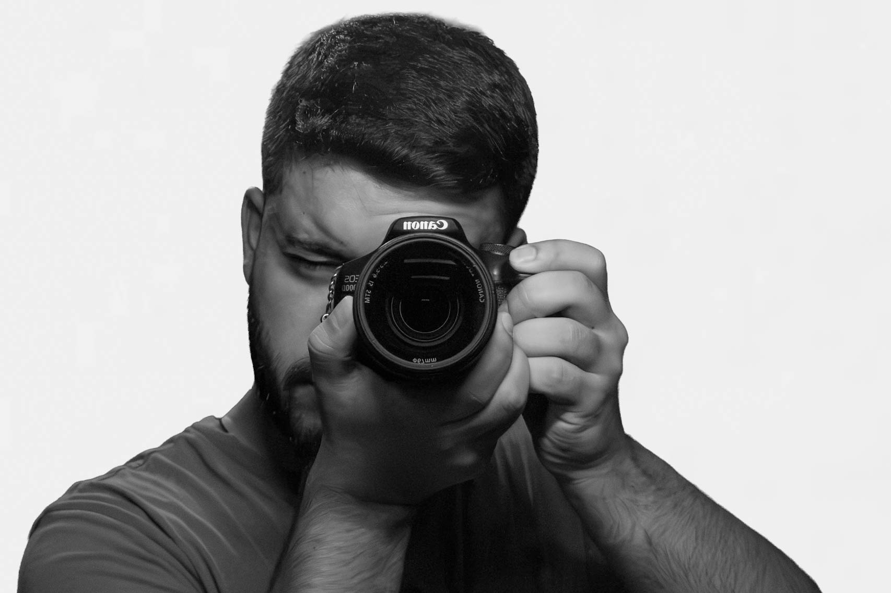

Sobre o Fotógrafo
Olá! Sou o Paulo, criador por trás de @paulo.frame. A minha paixão divide-se entre a adrenalina dos concertos ao vivo e a conexão humana nos retratos.
Trabalho para capturar a essência do momento exato — seja o bater de um acorde sob luzes psicadélicas ou a expressão genuína de uma pessoa.
